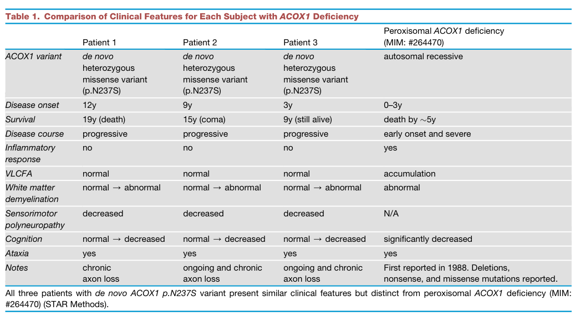

Mitchell syndrome (ACOX1 upregulation) is an ultra-rare autosomal dominant peroxisomal disorder caused by the recurrent, usually de novo, heterozygous ACOX1 missense variant p.Asn237Ser. In contrast to recessive ACOX1 deficiency, the variant is a gain of function: it stabilizes ACOX1 as an active homodimer and raises peroxisomal straight-chain acyl-CoA oxidase activity without increasing very-long-chain fatty acids. Excess hydrogen peroxide and other reactive oxygen species produced by the overactive oxidase damage myelinating glia (Schwann cells and their fly counterparts), leading to glial and axonal loss. Patients present in childhood with a relapsing-progressive course of episodic demyelination, sensorimotor polyneuropathy, myelopathy and ataxia, sensorineural hearing loss, ichthyosis and visual impairment, which often mimics autoimmune inflammatory disease.
Ask a research question about Mitchell Syndrome. OpenScientist will conduct autonomous deep research using the Disorder Mechanisms Knowledge Base and PubMed literature (typically 10-30 minutes).
Do not include personal health information in your question. Questions and results are cached in your browser's local storage.
Conditions with similar clinical presentations that must be differentiated from Mitchell Syndrome:
name: Mitchell Syndrome
creation_date: "2026-10-10T23:15:00Z"
description: >-
Mitchell syndrome (ACOX1 upregulation) is an ultra-rare autosomal dominant
peroxisomal disorder caused by the recurrent, usually de novo, heterozygous
ACOX1 missense variant p.Asn237Ser. In contrast to recessive ACOX1
deficiency, the variant is a gain of function: it stabilizes ACOX1 as an
active homodimer and raises peroxisomal straight-chain acyl-CoA oxidase
activity without increasing very-long-chain fatty acids. Excess
hydrogen peroxide and other reactive oxygen species produced by the
overactive oxidase damage myelinating glia (Schwann cells and their fly
counterparts), leading to glial and axonal loss. Patients present in
childhood with a relapsing-progressive course of episodic demyelination,
sensorimotor polyneuropathy, myelopathy and ataxia, sensorineural hearing
loss, ichthyosis and visual impairment, which often mimics autoimmune
inflammatory disease.
category: Metabolic Disorder
synonyms:
- ACOX1 upregulation
- MITCH
- ACOX1 gain-of-function disorder
parents:
- hereditary disease
- disorder of defective peroxisome oxidative status
disease_term:
preferred_term: Mitchell syndrome
term:
id: MONDO:0030073
label: Mitchell syndrome
inheritance:
- name: Autosomal dominant inheritance
inheritance_term:
preferred_term: Autosomal dominant inheritance
term:
id: HP:0000006
label: Autosomal dominant inheritance
description: >-
Heterozygous ACOX1 p.Asn237Ser, usually arising de novo.
evidence:
- reference: PMID:37400800
reference_title: "A de novo heterozygous variant in ACOX1 gene cause Mitchell syndrome: the first case in China and literature review."
supports: SUPPORT
evidence_source: HUMAN_CLINICAL
snippet: "Mitchell syndrome (MITCH) is a rare autosomal dominant hereditary disorder, characterized by episodic demyelination, sensorimotor polyneuropathy and hearing loss."
explanation: The case report states autosomal dominant inheritance of MITCH.
epidemiology:
- name: Ultra-rare reported-patient disorder
description: >-
Only a small number of patients carrying ACOX1 p.Asn237Ser have been
published since the disorder was described in 2020.
evidence:
- reference: PMID:38923841
reference_title: "ACOX1 gain-of-function variation in a 10-years-old patient responsive to immunomodulating therapy."
supports: SUPPORT
evidence_source: HUMAN_CLINICAL
snippet: "Only eight patients have been described so far."
explanation: Supports extreme rarity of the disorder.
progression:
- phase: Childhood onset with relapsing-progressive course
age_range: childhood
notes: >-
Onset is in childhood, with waxing and waning episodes (often after
infections) superimposed on progressive neurological decline.
evidence:
- reference: PMID:32169171
reference_title: "Loss- or Gain-of-Function Mutations in ACOX1 Cause Axonal Loss via Different Mechanisms."
supports: SUPPORT
evidence_source: HUMAN_CLINICAL
snippet: "In each case the probands display remarkably similar phenotypes, including a progressive myeloneuropathy with sensorineural hearing loss (Table 1, STAR Methods), onset from age 3 to 12 years (STAR Methods)."
explanation: Supports childhood onset and progressive course in the index patients.
- reference: PMID:37400800
reference_title: "A de novo heterozygous variant in ACOX1 gene cause Mitchell syndrome: the first case in China and literature review."
supports: SUPPORT
evidence_source: HUMAN_CLINICAL
snippet: "all of them displayed remarkably similar phenotypes, including progressive demyelination with sensorineural hearing loss, a waxing and waning courses"
explanation: Supports the waxing and waning (episodic) progressive course across reported patients.
pathophysiology:
- name: ACOX1 N237S Gain-of-Function Acyl-CoA Oxidase Hyperactivity
description: >-
The heterozygous ACOX1 p.Asn237Ser variant stabilizes ACOX1 as a
constitutively active homodimer that accumulates to higher levels and is
about 40% more active per unit protein, increasing straight-chain
acyl-CoA oxidase activity in the peroxisomal matrix. Unlike recessive
ACOX1 deficiency, VLCFA levels are not increased.
biological_scale: MOLECULAR
genes:
- preferred_term: ACOX1
term:
id: hgnc:119
label: ACOX1
genetic_context:
variant_origin: GERMLINE
zygosity: HETEROZYGOUS
functional_impact_category: GAIN_OF_FUNCTION
description: >-
Recurrent heterozygous germline (usually de novo) ACOX1 c.710A>G,
p.Asn237Ser.
molecular_functions:
- preferred_term: acyl-CoA oxidase activity
term:
id: GO:0003997
label: acyl-CoA oxidase activity
modifier: INCREASED
cellular_components:
- preferred_term: peroxisomal matrix
term:
id: GO:0005782
label: peroxisomal matrix
evidence:
- reference: PMID:32169171
reference_title: "Loss- or Gain-of-Function Mutations in ACOX1 Cause Axonal Loss via Different Mechanisms."
supports: SUPPORT
evidence_source: IN_VITRO
snippet: "The data show that ACOX1N237S is more active by ~40% than ACOX1WT protein when normalized for protein levels (Figure 4E)."
explanation: In vitro enzymatic assays show increased specific acyl-CoA oxidase activity of the N237S protein.
- reference: PMID:32169171
reference_title: "Loss- or Gain-of-Function Mutations in ACOX1 Cause Axonal Loss via Different Mechanisms."
supports: SUPPORT
evidence_source: MODEL_ORGANISM
snippet: "The above data indicate that ACOX1 p.N237S is a gain of function variant that leads to the formation of a constitutively active dimer that generates excess ROS."
explanation: Summarizes fly expression data establishing a stabilized, constitutively active dimer.
- reference: PMID:32169171
reference_title: "Loss- or Gain-of-Function Mutations in ACOX1 Cause Axonal Loss via Different Mechanisms."
supports: SUPPORT
evidence_source: HUMAN_CLINICAL
snippet: "the de novo variant present in these probands does not cause an increase in VLCFA suggesting a new disease mechanism for ACOX1"
explanation: Patients do not show the VLCFA accumulation that defines loss-of-function ACOX1 deficiency.
- reference: CGGV:assertion_2efeef00-0803-472b-8e25-080e4728c018-2025-12-05T170000.000Z
reference_title: "ACOX1 / Mitchell syndrome (Definitive)"
supports: SUPPORT
evidence_source: OTHER
snippet: "The mechanism is reported to be gain of function (PMID: 32169171)."
explanation: ClinGen's curation records gain of function as the disease mechanism.
downstream:
- target: Excess Peroxisomal Hydrogen Peroxide and ROS Production
causal_link_type: DIRECT
description: >-
ACOX1 transfers electrons from acyl-CoA directly to O2, so increased
oxidase activity increases peroxisomal H2O2 production.
evidence:
- reference: PMID:32169171
reference_title: "Loss- or Gain-of-Function Mutations in ACOX1 Cause Axonal Loss via Different Mechanisms."
supports: SUPPORT
evidence_source: MODEL_ORGANISM
snippet: "However, this mutation causes increased levels of ACOX1 protein and function resulting in elevated levels of reactive oxygen species in glia in flies and murine Schwann cells."
explanation: Links increased ACOX1 function to elevated ROS in glia.
- name: Excess Peroxisomal Hydrogen Peroxide and ROS Production
description: >-
The overactive ACOX1 homodimer generates excess hydrogen peroxide in the
peroxisome, producing elevated reactive oxygen species in insulating
glia. Antioxidant (N-acetylcysteine amide) treatment or catalase
overexpression suppresses the toxicity in flies and Schwann cells.
biological_scale: CELLULAR
biological_processes:
- preferred_term: hydrogen peroxide biosynthetic process
term:
id: GO:0050665
label: hydrogen peroxide biosynthetic process
modifier: INCREASED
chemical_entities:
- preferred_term: hydrogen peroxide
term:
id: CHEBI:16240
label: hydrogen peroxide
modifier: INCREASED
cell_types:
- preferred_term: Schwann cell
term:
id: CL:0002573
label: Schwann cell
evidence:
- reference: PMID:32169171
reference_title: "Loss- or Gain-of-Function Mutations in ACOX1 Cause Axonal Loss via Different Mechanisms."
supports: SUPPORT
evidence_source: IN_VITRO
snippet: "We also observe an increase in H2O2 when we overexpress hACOX1WT and hACOX1N250S in Schwann cells and this increase is again suppressed by NACA"
explanation: ACOX1 overexpression raises H2O2 in Schwann cells, suppressed by an antioxidant.
- reference: PMID:32169171
reference_title: "Loss- or Gain-of-Function Mutations in ACOX1 Cause Axonal Loss via Different Mechanisms."
supports: SUPPORT
evidence_source: MODEL_ORGANISM
snippet: "Consistent with this, overexpression of peroxisomal catalase also rescued both the lethality and life span defects associated with dACOX1N250S (Figure 5B)."
explanation: Catalase rescue implicates peroxisomal H2O2 as the toxic species in the fly gain-of-function model.
downstream:
- target: Glial and Schwann Cell Loss
causal_link_type: DIRECT
description: Excess ROS kills ensheathing glia and Schwann cells.
evidence:
- reference: PMID:32169171
reference_title: "Loss- or Gain-of-Function Mutations in ACOX1 Cause Axonal Loss via Different Mechanisms."
supports: SUPPORT
evidence_source: MODEL_ORGANISM
snippet: "These data clearly indicate that fly wrapping glia are sensitive to the high ROS induced by dACOX1N250S."
explanation: Fly data link the high ROS to wrapping glia vulnerability.
- name: Glial and Schwann Cell Loss
description: >-
Myelinating and ensheathing glia degenerate. A patient sural nerve
showed degenerating Schwann cells with lipid droplets and myelin debris,
and expression of human N237S ACOX1 in cultured Schwann cells increased
apoptotic death.
biological_scale: CELLULAR
biological_processes:
- preferred_term: glial cell apoptotic process
term:
id: GO:0034349
label: glial cell apoptotic process
modifier: INCREASED
cell_types:
- preferred_term: Schwann cell
term:
id: CL:0002573
label: Schwann cell
- preferred_term: glial cell
term:
id: CL:0000125
label: glial cell
evidence:
- reference: PMID:32169171
reference_title: "Loss- or Gain-of-Function Mutations in ACOX1 Cause Axonal Loss via Different Mechanisms."
supports: SUPPORT
evidence_source: IN_VITRO
snippet: "Expression of hACOX1N237S in rat Schwann cells caused an even more severe increase in apoptotic cell death than the wt isoform (Figure 6B)."
explanation: Human N237S ACOX1 increases apoptotic death of cultured Schwann cells.
- reference: PMID:32169171
reference_title: "Loss- or Gain-of-Function Mutations in ACOX1 Cause Axonal Loss via Different Mechanisms."
supports: SUPPORT
evidence_source: HUMAN_CLINICAL
snippet: "Transmission electron microscopy (Figure 7B) showed degenerating Schwann cells with lipid droplets and myelin debris (Figure S7)."
explanation: Patient sural nerve pathology shows Schwann cell degeneration.
downstream:
- target: Demyelination and Axonal Loss
causal_link_type: DIRECT
description: Loss of ensheathing glia leads to demyelination and secondary axonal loss.
evidence:
- reference: PMID:32169171
reference_title: "Loss- or Gain-of-Function Mutations in ACOX1 Cause Axonal Loss via Different Mechanisms."
supports: SUPPORT
evidence_source: HUMAN_CLINICAL
snippet: "ACOX1 (p.N237S) patients exhibit a severe loss of Schwann cells and neurons."
explanation: Glial loss is accompanied by neuronal/axonal loss in patients.
- name: Demyelination and Axonal Loss
description: >-
Episodic central and peripheral demyelination with progressive loss of
large and small myelinated and unmyelinated axons underlies the
neuropathy, myelopathy, hearing loss and ataxia.
biological_scale: TISSUE
locations:
- preferred_term: sural nerve
term:
id: UBERON:0015488
label: sural nerve
evidence:
- reference: PMID:32169171
reference_title: "Loss- or Gain-of-Function Mutations in ACOX1 Cause Axonal Loss via Different Mechanisms."
supports: SUPPORT
evidence_source: HUMAN_CLINICAL
snippet: "We observed a prominent loss of large and small myelinated and small non-myelinated axons in the sural nerve of Patient 1 when compared to a normal nerve section"
explanation: Patient nerve biopsy documents axonal loss.
- reference: PMID:38357503
reference_title: "Generation and characterization of a zebrafish gain-of-function ACOX1 Mitchell disease model."
supports: SUPPORT
evidence_source: HUMAN_CLINICAL
snippet: "Over the next 4 months, the patient faced multiple hospital admissions, with an increasing burden of demyelinating lesions"
explanation: A patient described in the zebrafish-model paper accumulated CNS demyelinating lesions.
downstream:
- target: Sensorimotor Polyneuropathy
causal_link_type: DIRECT
description: Peripheral glial and axonal loss produce sensorimotor neuropathy.
- target: CNS Demyelination
causal_link_type: DIRECT
description: Central glial injury produces demyelinating lesions and myelopathy.
- target: Myelopathy
causal_link_type: DIRECT
description: Spinal cord demyelination produces myelopathy.
- target: Sensorineural Hearing Loss
causal_link_type: INDIRECT_UNKNOWN_INTERMEDIATES
description: >-
Hearing loss accompanies the myeloneuropathy; its precise
mechanism has not been dissected.
- target: Gait Ataxia
causal_link_type: DIRECT
description: Myeloneuropathy with sensory loss produces gait ataxia.
- target: Leukodystrophy
causal_link_type: DIRECT
description: Central glial injury extends to cerebral white matter.
phenotypes:
- category: Neurologic
name: Sensorimotor Polyneuropathy
description: Progressive sensorimotor (axonal) polyneuropathy.
phenotype_term:
preferred_term: Sensorimotor neuropathy
term:
id: HP:0007141
label: Sensorimotor neuropathy
clinical_course: PROGRESSIVE
evidence:
- reference: PMID:37400800
reference_title: "A de novo heterozygous variant in ACOX1 gene cause Mitchell syndrome: the first case in China and literature review."
supports: SUPPORT
evidence_source: HUMAN_CLINICAL
snippet: "MITCH is a progressive disorder characterized by episodic demyelination, sensorimotor polyneuropathy and hearing loss"
explanation: Sensorimotor polyneuropathy is a defining feature.
- reference: CGGV:assertion_2efeef00-0803-472b-8e25-080e4728c018-2025-12-05T170000.000Z
reference_title: "ACOX1 / Mitchell syndrome (Definitive)"
supports: SUPPORT
evidence_source: OTHER
snippet: "The disorder is characterized by progressive sensorimotor axonal polyneuropathy and normal very long chain fatty acids (VLCFAs)."
explanation: ClinGen summary of the disease phenotype.
- category: Neurologic
name: CNS Demyelination
description: Episodic CNS demyelination, including myelopathy and white matter lesions.
phenotype_term:
preferred_term: CNS demyelination
term:
id: HP:0007305
label: CNS demyelination
temporality: RECURRENT
evidence:
- reference: PMID:38923841
reference_title: "ACOX1 gain-of-function variation in a 10-years-old patient responsive to immunomodulating therapy."
supports: SUPPORT
evidence_source: HUMAN_CLINICAL
snippet: "Mitchell syndrome, a very rare progressive disorder characterized by episodic demyelination, sensory polyneuropathy, and hearing loss"
explanation: Episodic demyelination is a defining feature.
- category: Neurologic
name: Myelopathy
description: Longitudinally extensive myelopathy has been reported.
phenotype_term:
preferred_term: Myelopathy
term:
id: HP:0002196
label: Myelopathy
evidence:
- reference: PMID:35715200
reference_title: "Child Neurology: Neurodegenerative Encephalomyelopathy Associated With ACOX1 Gain-of-Function Variation Partially Responsive to Immunotherapy."
supports: SUPPORT
evidence_source: HUMAN_CLINICAL
snippet: "We report the case of a 19-year-old woman with a 5-year history of longitudinally extensive posterior predominant myelopathy"
explanation: Case report documenting myelopathy.
- category: Neurologic
name: Sensorineural Hearing Loss
description: Progressive sensorineural hearing loss.
phenotype_term:
preferred_term: Sensorineural hearing impairment
term:
id: HP:0000407
label: Sensorineural hearing impairment
clinical_course: PROGRESSIVE
evidence:
- reference: PMID:32169171
reference_title: "Loss- or Gain-of-Function Mutations in ACOX1 Cause Axonal Loss via Different Mechanisms."
supports: SUPPORT
evidence_source: HUMAN_CLINICAL
snippet: "including a progressive myeloneuropathy with sensorineural hearing loss"
explanation: Sensorineural hearing loss in the index patients.
- reference: PMID:37846133
reference_title: "ACOX1 Gain-of-Function Variant in Two German Pediatric Patients, in One Case Mimicking Autoimmune Inflammatory Disease."
supports: SUPPORT
evidence_source: HUMAN_CLINICAL
snippet: "Both patients showed neurodegenerative clinical features starting from ∼4 to 5 years of age including progressive hearing loss, ataxia, ichthyosis, as well as progressive visual impairment leading to amaurosis"
explanation: Progressive hearing loss in two additional patients.
- category: Neurologic
name: Gait Ataxia
description: Gait instability and ataxia, with loss of ambulation in some patients.
phenotype_term:
preferred_term: Gait ataxia
term:
id: HP:0002066
label: Gait ataxia
evidence:
- reference: PMID:38923841
reference_title: "ACOX1 gain-of-function variation in a 10-years-old patient responsive to immunomodulating therapy."
supports: SUPPORT
evidence_source: HUMAN_CLINICAL
snippet: "who presented with progressive sensorineural deafness, visual abnormalities, skin ichthyosis, and gait ataxia from infantile age with progressive worsening and loss of walking ability by the age of 10 years"
explanation: Gait ataxia with loss of ambulation.
- category: Dermatologic
name: Ichthyosis
description: Recurrent ichthyosiform or desquamative rash.
phenotype_term:
preferred_term: Ichthyosis
term:
id: HP:0008064
label: Ichthyosis
evidence:
- reference: PMID:37846133
reference_title: "ACOX1 Gain-of-Function Variant in Two German Pediatric Patients, in One Case Mimicking Autoimmune Inflammatory Disease."
supports: SUPPORT
evidence_source: HUMAN_CLINICAL
snippet: "Both patients showed neurodegenerative clinical features starting from ∼4 to 5 years of age including progressive hearing loss, ataxia, ichthyosis, as well as progressive visual impairment leading to amaurosis"
explanation: Ichthyosis in both German patients.
- category: Ophthalmologic
name: Progressive Visual Impairment
description: Progressive visual impairment, reaching amaurosis in some patients.
phenotype_term:
preferred_term: Progressive visual loss
term:
id: HP:0000529
label: Progressive visual loss
evidence:
- reference: PMID:37846133
reference_title: "ACOX1 Gain-of-Function Variant in Two German Pediatric Patients, in One Case Mimicking Autoimmune Inflammatory Disease."
supports: SUPPORT
evidence_source: HUMAN_CLINICAL
snippet: "progressive visual impairment leading to amaurosis"
explanation: Progressive visual impairment in two patients.
- category: Neurologic
name: Leukodystrophy
description: >-
Cerebral white matter lesions that can progress to periventricular
white matter necrosis late in the course; spinal involvement often
precedes them.
phenotype_term:
preferred_term: Leukodystrophy
term:
id: HP:0002415
label: Leukodystrophy
clinical_course: PROGRESSIVE
evidence:
- reference: PMID:38357503
reference_title: "Generation and characterization of a zebrafish gain-of-function ACOX1 Mitchell disease model."
supports: SUPPORT
evidence_source: HUMAN_CLINICAL
snippet: "The patient experienced progressive leukodystrophy and died 2 years after presentation."
explanation: Progressive leukodystrophy in a patient with ACOX1 N237S.
- reference: PMID:35715200
reference_title: "Child Neurology: Neurodegenerative Encephalomyelopathy Associated With ACOX1 Gain-of-Function Variation Partially Responsive to Immunotherapy."
supports: SUPPORT
evidence_source: HUMAN_CLINICAL
snippet: "longitudinally extensive posterior predominant myelopathy, bilateral corneal scars, and white matter lesions"
explanation: White matter lesions alongside myelopathy in a second patient.
- category: Neurologic
name: Seizures
description: >-
Seizures are reported in some patients; in one they were attributed to
posterior reversible encephalopathy syndrome rather than to the primary
disease.
phenotype_term:
preferred_term: Seizure
term:
id: HP:0001250
label: Seizure
evidence:
- reference: PMID:35715200
reference_title: "Child Neurology: Neurodegenerative Encephalomyelopathy Associated With ACOX1 Gain-of-Function Variation Partially Responsive to Immunotherapy."
supports: SUPPORT
evidence_source: HUMAN_CLINICAL
snippet: "who presented with first-time seizure, progressive sensorineural hearing loss, ichthyosiform rash, and cauda equina syndrome"
explanation: First-time seizure in a patient with ACOX1 N237S.
- reference: PMID:38357503
reference_title: "Generation and characterization of a zebrafish gain-of-function ACOX1 Mitchell disease model."
supports: SUPPORT
evidence_source: HUMAN_CLINICAL
snippet: "Her clinical course was complicated by seizures secondary to posterior reversible encephalopathy syndrome"
explanation: Seizures in a second patient, attributed by the authors to PRES.
- category: Ophthalmologic
name: Corneal Scarring
description: Bilateral corneal scars.
phenotype_term:
preferred_term: Corneal scarring
term:
id: HP:0000559
label: Corneal scarring
evidence:
- reference: PMID:35715200
reference_title: "Child Neurology: Neurodegenerative Encephalomyelopathy Associated With ACOX1 Gain-of-Function Variation Partially Responsive to Immunotherapy."
supports: SUPPORT
evidence_source: HUMAN_CLINICAL
snippet: "longitudinally extensive posterior predominant myelopathy, bilateral corneal scars, and white matter lesions"
explanation: Bilateral corneal scars in a patient with ACOX1 N237S.
genetic:
- name: ACOX1
gene_term:
preferred_term: ACOX1
term:
id: hgnc:119
label: ACOX1
association: >-
The recurrent heterozygous gain-of-function variant p.Asn237Ser causes
autosomal dominant Mitchell syndrome.
relationship_type: CAUSATIVE
variant_origin: GERMLINE
notes: >-
Allelic with autosomal recessive peroxisomal acyl-CoA oxidase deficiency
(Peroxisomal_Acyl-CoA_Oxidase_Deficiency), which is caused by biallelic
loss-of-function ACOX1 variants; ClinGen split the two diseases because
their mechanisms, inheritance and phenotypes differ.
gene_disease_validity:
- validity_classification: DEFINITIVE
classified_by: CLINGEN
external_id: CGGV:assertion_2efeef00-0803-472b-8e25-080e4728c018-2025-12-05T170000.000Z
evidence:
- reference: CGGV:assertion_2efeef00-0803-472b-8e25-080e4728c018-2025-12-05T170000.000Z
reference_title: "ACOX1 / Mitchell syndrome (Definitive)"
supports: SUPPORT
evidence_source: OTHER
snippet: "ACOX1 | HGNC:119 | Mitchell syndrome | MONDO:0030073 | AD | Definitive"
explanation: ClinGen Peroxisomal Disorders GCEP classifies ACOX1 - Mitchell syndrome (AD) as Definitive.
variants:
- name: ACOX1 c.710A>G p.Asn237Ser
description: >-
Recurrent, usually de novo, heterozygous missense variant found in
all reported patients.
evidence:
- reference: PMID:35715200
reference_title: "Child Neurology: Neurodegenerative Encephalomyelopathy Associated With ACOX1 Gain-of-Function Variation Partially Responsive to Immunotherapy."
supports: SUPPORT
evidence_source: HUMAN_CLINICAL
snippet: "a heterozygous variation in the ACOX1 gene (NM_004035.6: c.710A>G, p.Asn237Ser), now considered to be pathogenic"
explanation: Identifies the variant in an affected patient.
- reference: PMID:32169171
reference_title: "Loss- or Gain-of-Function Mutations in ACOX1 Cause Axonal Loss via Different Mechanisms."
supports: SUPPORT
evidence_source: HUMAN_CLINICAL
snippet: "Patients who carry a previously unidentified, de novo, dominant variant in ACOX1 (p.N237S) also exhibit glial loss."
explanation: De novo dominant occurrence in the index patients.
evidence:
- reference: PMID:32169171
reference_title: "Loss- or Gain-of-Function Mutations in ACOX1 Cause Axonal Loss via Different Mechanisms."
supports: SUPPORT
evidence_source: HUMAN_CLINICAL
snippet: "Patients who carry a previously unidentified, de novo, dominant variant in ACOX1 (p.N237S) also exhibit glial loss."
explanation: Original report of the causal ACOX1 variant.
diagnosis:
- name: Exome or genome sequencing with reanalysis
description: >-
Diagnosis rests on identifying heterozygous ACOX1 c.710A>G
p.Asn237Ser by exome or genome sequencing, ideally as a trio. Because
ACOX1 was long known only as a recessive gene, a heterozygous variant
may be overlooked, and reanalysis of nondiagnostic exome or genome data
has resolved several cases.
diagnosis_term:
preferred_term: whole exome sequencing
term:
id: NCIT:C101295
label: Whole Exome Sequencing
results: Heterozygous, usually de novo, ACOX1 p.Asn237Ser.
evidence:
- reference: PMID:35715200
reference_title: "Child Neurology: Neurodegenerative Encephalomyelopathy Associated With ACOX1 Gain-of-Function Variation Partially Responsive to Immunotherapy."
supports: SUPPORT
evidence_source: HUMAN_CLINICAL
snippet: "Whole-exome sequencing performed 4 years before was nondiagnostic, but subsequent reanalysis revealed a heterozygous variation in the ACOX1 gene"
explanation: Exome reanalysis identified the causal variant after an initially nondiagnostic test.
- reference: PMID:37400800
reference_title: "A de novo heterozygous variant in ACOX1 gene cause Mitchell syndrome: the first case in China and literature review."
supports: SUPPORT
evidence_source: HUMAN_CLINICAL
snippet: "Given waxed and waned courses and progressive symptoms, we conducted whole exome sequencing (WES) to identify the etiology."
explanation: Trio exome sequencing identified the de novo ACOX1 variant.
- reference: PMID:38357503
reference_title: "Generation and characterization of a zebrafish gain-of-function ACOX1 Mitchell disease model."
supports: SUPPORT
evidence_source: HUMAN_CLINICAL
snippet: "We report a case of a patient presenting with rapidly progressive white matter damage, who was eventually diagnosed with an ACOX1 N237S variant through next-generation sequencing and re-analysis."
explanation: Genome sequencing with reanalysis established the diagnosis in a third patient.
- name: Plasma very-long-chain fatty acid measurement
description: >-
Plasma VLCFA are normal, which distinguishes Mitchell syndrome from
recessive ACOX1 deficiency and other VLCFA-accumulating peroxisomal
disorders; normal VLCFA therefore do not exclude it.
diagnosis_term:
preferred_term: very long chain fatty acids measurement
term:
id: NCIT:C147337
label: Very Long Chain Fatty Acids Measurement
results: Normal plasma VLCFA.
evidence:
- reference: PMID:37400800
reference_title: "A de novo heterozygous variant in ACOX1 gene cause Mitchell syndrome: the first case in China and literature review."
supports: SUPPORT
evidence_source: HUMAN_CLINICAL
snippet: "VLCFA were tested and the concentration was normal, indicating no loss of peroxisomal proteins and no decrease in enzyme activity"
explanation: Normal VLCFA in a genetically confirmed patient.
- reference: PMID:32169171
reference_title: "Loss- or Gain-of-Function Mutations in ACOX1 Cause Axonal Loss via Different Mechanisms."
supports: SUPPORT
evidence_source: HUMAN_CLINICAL
snippet: "the de novo variant present in these probands does not cause an increase in VLCFA"
explanation: VLCFA were not raised in the three index patients.
- name: Nerve conduction studies and electromyography
description: >-
Nerve conduction studies show slowed sensory and motor conduction and
reduced sensory nerve action potentials, consistent with peripheral
nerve damage.
diagnosis_term:
preferred_term: nerve conduction velocity test
term:
id: NCIT:C88502
label: Nerve Conduction Velocity Test
results: Slowed conduction velocities and reduced sensory nerve action potential amplitudes.
evidence:
- reference: PMID:37400800
reference_title: "A de novo heterozygous variant in ACOX1 gene cause Mitchell syndrome: the first case in China and literature review."
supports: SUPPORT
evidence_source: HUMAN_CLINICAL
snippet: "sensory and motor conduction velocity slowed and sensory nerve action potential amplitudes decreased as well as EMG suggested peripheral nerve damage"
explanation: Electrophysiology documented peripheral neuropathy.
- name: Brain and spine MRI
description: >-
Spinal MRI can show longitudinally extensive T2 hyperintensity of the
central grey matter and dorsal columns, often first read as transverse
myelitis, with later periventricular cerebral white matter lesions.
MRI can also be normal early in the course.
diagnosis_term:
preferred_term: magnetic resonance imaging
term:
id: NCIT:C16809
label: Magnetic Resonance Imaging
results: Longitudinally extensive dorsal-predominant spinal cord T2 lesions and cerebral white matter abnormality; may be normal.
evidence:
- reference: PMID:38357503
reference_title: "Generation and characterization of a zebrafish gain-of-function ACOX1 Mitchell disease model."
supports: SUPPORT
evidence_source: HUMAN_CLINICAL
snippet: "MRI cervical spine sagittal T2-weighted image with hyperintense signal involving the central gray matter, dorsal and lateral tracts of the cervical and thoracic spinal cord"
explanation: Spinal cord MRI findings at presentation.
- reference: PMID:38357503
reference_title: "Generation and characterization of a zebrafish gain-of-function ACOX1 Mitchell disease model."
supports: SUPPORT
evidence_source: HUMAN_CLINICAL
snippet: "She was diagnosed with longitudinally extensive transverse myelitis (LETM) based on magnetic resonance imaging (MRI) findings"
explanation: The spinal MRI picture was initially interpreted as inflammatory myelitis.
- reference: PMID:37400800
reference_title: "A de novo heterozygous variant in ACOX1 gene cause Mitchell syndrome: the first case in China and literature review."
supports: SUPPORT
evidence_source: HUMAN_CLINICAL
snippet: "Total spine and brain magnetic resonance imaging (MRI), as well as electroencephalogram (EEG), were unremarkable."
explanation: MRI was normal in another genetically confirmed patient, so a normal MRI does not exclude the disorder.
treatments:
- name: Intravenous Immunoglobulin and Immunomodulation
description: >-
Because Mitchell syndrome often mimics autoimmune demyelinating disease,
several patients have received immunomodulatory therapy; IVIG has been
followed by stabilization or improvement in individual case reports,
while steroids alone were ineffective in one patient.
therapeutic_modality: PROTEIN_REPLACEMENT
treatment_term:
preferred_term: intravenous immunoglobulin therapy
term:
id: NCIT:C121331
label: Intravenous Immunoglobulin Therapy
evidence:
- reference: PMID:35715200
reference_title: "Child Neurology: Neurodegenerative Encephalomyelopathy Associated With ACOX1 Gain-of-Function Variation Partially Responsive to Immunotherapy."
supports: SUPPORT
evidence_source: HUMAN_CLINICAL
snippet: "The patient showed no response to high-dose steroids but stabilization and improvement with return to baseline over 6 months with IVIg and low-dose mycophenolate mofetil."
explanation: Single-case report of IVIG-associated stabilization.
- reference: PMID:38923841
reference_title: "ACOX1 gain-of-function variation in a 10-years-old patient responsive to immunomodulating therapy."
supports: SUPPORT
evidence_source: HUMAN_CLINICAL
snippet: "Antioxidant therapies and monthly intravenous immunoglobulin infusions showed excellent clinical results: after 1 year of treatment, the child is now able to walk, run, and jump."
explanation: Single-case report of improvement on IVIG combined with antioxidants.
- name: Antioxidant Therapy
description: >-
Antioxidants target the excess ROS produced by the gain-of-function
oxidase. N-acetylcysteine amide (NACA) rescues the fly and Schwann cell
models but is not approved for human use, so patients have received
N-acetylcysteine (NAC) instead. NAC was followed by an 11-month
improvement in the index patient, who later died of a CNS flare, and by
no improvement in another patient; NAC penetrates the blood-brain
barrier poorly.
therapeutic_modality: SMALL_MOLECULE
treatment_term:
preferred_term: Pharmacotherapy
term:
id: NCIT:C15986
label: Pharmacotherapy
therapeutic_agent:
- preferred_term: N-acetylcysteine amide
term:
id: CHEBI:231847
label: N-Acetylcysteine amide
- preferred_term: N-acetylcysteine
term:
id: CHEBI:28939
label: N-acetyl-L-cysteine
target_mechanisms:
- target: Excess Peroxisomal Hydrogen Peroxide and ROS Production
treatment_effect: INHIBITS
description: NACA scavenges ROS generated by hyperactive ACOX1.
evidence:
- reference: PMID:32169171
reference_title: "Loss- or Gain-of-Function Mutations in ACOX1 Cause Axonal Loss via Different Mechanisms."
supports: SUPPORT
evidence_source: MODEL_ORGANISM
snippet: "Supplementing food with NACA (160 μg/ml) rescues the lethal phenotype of da>dACOX1N250S"
explanation: NACA rescues lethality in the fly gain-of-function model.
evidence:
- reference: PMID:32169171
reference_title: "Loss- or Gain-of-Function Mutations in ACOX1 Cause Axonal Loss via Different Mechanisms."
supports: SUPPORT
evidence_source: IN_VITRO
snippet: "Interestingly, the toxic effects of hACOX1WT and hACOX1N237S in rat Schwann cells are strongly suppressed by NACA (Figure 6B) when compared to vehicle control."
explanation: Preclinical support for antioxidant therapy; clinical evidence is anecdotal.
- reference: PMID:32169171
reference_title: "Loss- or Gain-of-Function Mutations in ACOX1 Cause Axonal Loss via Different Mechanisms."
supports: SUPPORT
evidence_source: HUMAN_CLINICAL
snippet: "Given that NACA is not yet approved for human use, during a severe disease flare Patient 1 was started on very high doses of the NAC as an alternative."
explanation: Explains why patients receive NAC rather than NACA.
- reference: PMID:32169171
reference_title: "Loss- or Gain-of-Function Mutations in ACOX1 Cause Axonal Loss via Different Mechanisms."
supports: SUPPORT
evidence_source: HUMAN_CLINICAL
snippet: "His disease course initially stabilized (Figure S8, table S3), and he had an 11 month phase of improvement."
explanation: Temporary improvement on high-dose NAC in the index patient (uncontrolled single case).
- reference: PMID:32169171
reference_title: "Loss- or Gain-of-Function Mutations in ACOX1 Cause Axonal Loss via Different Mechanisms."
supports: REFUTE
evidence_source: HUMAN_CLINICAL
snippet: "use of NAC, which does not penetrate the blood-brain-barrier, was unable to prevent another severe disease flare of the central nervous system"
explanation: NAC did not prevent the fatal CNS flare in the index patient.
- reference: PMID:38357503
reference_title: "Generation and characterization of a zebrafish gain-of-function ACOX1 Mitchell disease model."
supports: REFUTE
evidence_source: HUMAN_CLINICAL
snippet: "Unfortunately, the patient did not exhibit any clinical improvement after starting NAC therapy and ultimately succumbed to the condition."
explanation: No clinical response to enteral NAC in a second patient.
differential_diagnoses:
- name: Peroxisomal Acyl-CoA Oxidase Deficiency
disease_term:
preferred_term: peroxisomal acyl-CoA oxidase deficiency
term:
id: MONDO:0009919
label: peroxisomal acyl-CoA oxidase deficiency
description: >-
Allelic ACOX1 disorder with the opposite mechanism: biallelic loss of
function, decreased acyl-CoA oxidase activity and VLCFA accumulation,
with infantile-onset leukodystrophy.
distinguishing_features:
- >-
Mitchell syndrome has normal VLCFA, heterozygous p.Asn237Ser, and
later (childhood) onset with a relapsing course.
evidence:
- reference: PMID:32169171
reference_title: "Loss- or Gain-of-Function Mutations in ACOX1 Cause Axonal Loss via Different Mechanisms."
supports: SUPPORT
evidence_source: HUMAN_CLINICAL
snippet: "Indeed, the phenotypes of the three cases contrasted sharply to patients with ACOX1 deficiency, and the de novo variant present in these probands does not cause an increase in VLCFA suggesting a new disease mechanism for ACOX1"
explanation: Contrasts Mitchell syndrome with ACOX1 deficiency.
animal_models:
- name: Drosophila dACOX1 N250S overexpression model
species: Drosophila melanogaster
genotype: da-Gal4>UAS-dACOX1 N250S (fly equivalent of human N237S)
publication: PMID:32169171
description: >-
Ubiquitous expression of the fly homolog of the human variant causes
high ROS, wrapping glia and axonal loss, motor defects and early death,
rescued by NACA or catalase.
modeled_mechanisms:
- target: Excess Peroxisomal Hydrogen Peroxide and ROS Production
relationship: RECAPITULATES
fidelity: MODERATE
description: Recapitulates ROS-driven glial toxicity of the gain-of-function oxidase.
limitations: >-
Overexpression model in an invertebrate; wrapping glia stand in for
vertebrate Schwann cells and expression levels are not physiological.
evidence:
- reference: PMID:32169171
reference_title: "Loss- or Gain-of-Function Mutations in ACOX1 Cause Axonal Loss via Different Mechanisms."
supports: SUPPORT
evidence_source: MODEL_ORGANISM
snippet: "These data show that dACOX1N250S is toxic and leads to axonal loss as well as glial loss (Figure S5D)."
explanation: The fly model shows glial and axonal loss.
- name: Zebrafish ACOX1 N237S transgenic model
species: Zebrafish
genotype: Transgenic human ACOX1 N237S
publication: PMID:38357503
description: >-
Transgenic zebrafish expressing ACOX1 N237S show reduced swimming,
integrated stress response activation, and rescue by a dendrimer-NAC
antioxidant, without loss of oligodendrocytes.
modeled_mechanisms:
- target: Excess Peroxisomal Hydrogen Peroxide and ROS Production
relationship: PARTIALLY_RECAPITULATES
fidelity: LOW
description: Motor impairment rescued by antioxidant treatment.
limitations: >-
Oligodendrocyte counts were not reduced, so glial loss is not
recapitulated at the larval stages examined.
evidence:
- reference: PMID:38357503
reference_title: "Generation and characterization of a zebrafish gain-of-function ACOX1 Mitchell disease model."
supports: SUPPORT
evidence_source: MODEL_ORGANISM
snippet: "The transgenic zebrafish showed a decreased swimming ability, which was restored with the reactive microglia-targeted antioxidant dendrimer-N-acetyl-cysteine conjugate."
explanation: Antioxidant-responsive motor phenotype in the vertebrate model.
Deep research results are used as seeds for research; they do not undergo the same validation as the main records and may contain errors. How we use deep research.
Fold in Falcon deep research: diagnosis, phenotypes, NAC treatment evidence · 2026-10-11T03:17:45Z · View source
A Falcon deep-research report was run (research/Mitchell_Syndrome-deep-research-falcon.md). Preflight returned WARN only because the report quotes a source's misprinted OMIM number (MIM 619860); the report itself resolves the phenotype to OMIM 618960, which PMID:38357503 confirms. The report was read as leads; every added claim is quoted from a cached primary paper. Added a diagnosis section: exome/genome sequencing with reanalysis of nondiagnostic data (PMID:35715200, 37400800, 38357503), normal plasma VLCFA as the discriminator from recessive ACOX1 deficiency (PMID:37400800, 32169171), nerve conduction studies (PMID:37400800), and brain/spine MRI including the LETM-like spinal picture and a normal-MRI case (PMID:38357503, 37400800). Added phenotypes Leukodystrophy (wired from Demyelination and Axonal Loss), Seizure (noting one case attributed to PRES) and Corneal scarring. Corrected the antioxidant treatment: patients received NAC because NACA is not approved for human use; added NAC as an agent with the index patient's 11-month improvement and two REFUTE items (fatal CNS flare on NAC; no response in a second patient). Not taken: the report's 2025 autopsy (Hubler et al., Free Neuropathology) because no PMID was verified and no cache exists; alopecia and urinary retention (single cases); the zebrafish atf4 integrated-stress-response finding; population case counts.
Create: Mitchell Syndrome · 2026-10-10T23:15:02Z · View source
New entry for ACOX1 p.Asn237Ser gain-of-function Mitchell syndrome (MONDO:0030073), aligned with the ai-gene-review ACOX1 review (core MF GO:0003997, H2O2 biosynthesis GO:0050665, peroxisomal matrix). Pathograph: ACOX1 GoF with GO:0003997 INCREASED -> excess peroxisomal H2O2/ROS -> glial/Schwann cell loss -> demyelination and axonal loss -> neuropathy, CNS demyelination, myelopathy, hearing loss, ataxia. ClinGen Definitive (AD) tier copied from CGGV:assertion_2efeef00-0803-472b-8e25-080e4728c018-2025-12-05T170000.000Z (cache rebuilt with just clingen-rebuild). Evidence from PMID:32169171 (full text), 35715200, 37400800, 37846133, 38357503, 38923841. Stub stubs/Mitchell_Syndrome.yaml deleted. No deep-research provider run; literature read directly from fetched caches.
Question: You are an expert researcher providing comprehensive, well-cited information.
Provide detailed information focusing on: 1. Key concepts and definitions with current understanding 2. Recent developments and latest research (prioritize 2023-2024 sources) 3. Current applications and real-world implementations 4. Expert opinions and analysis from authoritative sources 5. Relevant statistics and data from recent studies
Format as a comprehensive research report with proper citations. Include URLs and publication dates where available. Always prioritize recent, authoritative sources and provide specific citations for all major claims.
Please provide a comprehensive research report on Mitchell Syndrome covering all of the disease characteristics listed below. This report will be used to populate a disease knowledge base entry. Be thorough and cite primary literature (PMID preferred) for all claims.
For each section, suggested databases/resources are listed. These are the first places you should search for information on each topic.
Search first: OMIM, Orphanet, ICD-10/ICD-11, MeSH, PubMed
Search first: PubMed, Cochrane Library, UpToDate, clinical guidelines, ClinVar, ClinGen, GWAS Catalog, PheGenI, CTD, CDC, WHO, epidemiological databases
Search first: PubMed, Cochrane Library, clinical trial databases, GWAS Catalog, gnomAD, WHO, CDC, nutrition databases
Search first: CTD, PubMed, PheGenI, GxE databases
Search first: HPO (Human Phenotype Ontology), OMIM, Orphanet, PubMed, clinicaltrials.gov, MedDRA, SNOMED CT, DECIPHER, LOINC
For each phenotype, provide: - Phenotype type: symptoms, clinical signs, physical manifestations, behavioral changes, or laboratory abnormalities
For symptoms/signs: HPO, OMIM, Orphanet, PubMed For behavioral changes: HPO, DSM, RDoC (Research Domain Criteria), PubMed For laboratory abnormalities: LOINC, SNOMED CT, LabTests Online, PubMed - Phenotype characteristics: Search first: OMIM, Orphanet, HPO, PubMed - Age of symptom onset (neonatal, childhood, adult-onset, late-onset) - Symptom severity (mild, moderate, severe, variable) - Symptom progression (stable, progressive, episodic, fluctuating) - Frequency among affected individuals (percentage or qualitative) - Quality of life impact: Effects on daily functioning and well-being (per-phenotype when possible) Search first: EQ-5D database, SF-36, WHO QOL databases, PubMed - Suggest HPO (Human Phenotype Ontology) terms for each phenotype
Search first: OMIM, ClinVar, HGMD, Ensembl, NCBI Gene
Search first: ENCODE, Roadmap Epigenomics, MethBase, DiseaseMeth
Search first: DECIPHER, ClinVar, ECARUCA, UCSC Genome Browser
Search first: CTD (Comparative Toxicogenomics Database), TOXNET, PubMed, EPA databases
Search first: CDC databases, WHO, PubMed, NHANES
Search first: NCBI Taxonomy, ViPR, BV-BRC, MicrobeDB, GIDEON
Present this section as an ordered causal chain first, then the detail below. Open with a numbered sequence of mechanistic steps running from the initiating lesion (mutation, exposure, infection) to the clinical manifestation, one step per line, each naming what it causes next. State the causal verb explicitly ("leads to", "results in") and say where a step is inferred rather than demonstrated. Where the mechanism branches, show the branch. The categories below are a checklist of what to cover within those steps, not the organizing structure — a step may draw on several of them, and a category may contribute to several steps.
Search first: KEGG, Reactome, WikiPathways, PathBank, BioCyc
Search first: Gene Ontology (GO), Reactome, KEGG, PubMed
Search first: UniProt, PDB (Protein Data Bank), InterPro, Pfam, AlphaFold
Search first: KEGG, BioCyc, HMDB (Human Metabolome Database), BRENDA
Search first: ImmPort, Immunome Database, IEDB, Gene Ontology
Search first: PubMed, Gene Ontology, Reactome
Search first: BRENDA, UniProt, KEGG, OMIM, PubMed
Search first: ENCODE, Roadmap Epigenomics, MethBase, DiseaseMeth
For each mechanism, describe: - The causal chain from initial trigger to clinical manifestation - Which mechanisms are upstream vs downstream - What cell types and biological processes are involved - Suggest GO terms for biological processes and CL terms for cell types
Search first: Uberon, FMA (Foundational Model of Anatomy), OMIM, HPO, ICD-11, MeSH, SNOMED CT
Search first: Uberon, Human Protein Atlas, Cell Ontology, Human Cell Atlas, CellMarker, PanglaoDB
Search first: Gene Ontology (Cellular Component), UniProt, Human Protein Atlas
Search first: OMIM, Orphanet, HPO, PubMed
Search first: Disease registries, longitudinal cohort databases, natural history studies, PubMed, Orphanet, OMIM
Search first: Orphanet, CDC, WHO, GBD (Global Burden of Disease), national registries, SEER, disease registries
Search first: GTR (Genetic Testing Registry), GeneReviews, ClinGen
For each treatment, suggest NCIT (NCI Thesaurus) clinical-intervention terms where applicable.
Search first: CDC vaccine schedules, WHO immunization, FDA vaccine database
Search first: CDC, WHO, behavioral intervention databases, Cochrane Library
Search first: NSGC resources, ACMG guidelines, GeneReviews
Search first: Clinical guidelines, FDA approvals, PubMed
Search first: NCBI Taxonomy
Search first: VBO (Vertebrate Breed Ontology)
Search first: NCBI Gene
Structure your response as a comprehensive narrative organized by the sections above. For each section, provide: - Factual content with specific details (numbers, percentages, gene names, variant nomenclature) - Ontology term suggestions (HPO, GO, CL, UBERON, CHEBI, NCIT, MONDO) where applicable - Evidence citations with PMIDs - Direct quotes from abstracts to support key claims - Clear indication when information is not available or not applicable for this disease
This report will be used to populate a disease knowledge base entry with: - Pathophysiology descriptions with causal chains - Gene/protein annotations (HGNC, GO terms) - Phenotype associations (HP terms) with frequencies - Cell type involvement (CL terms) - Anatomical locations (UBERON terms) - Chemical entities (CHEBI terms) - Treatment annotations (NCIT terms) - Evidence items with PMIDs and exact abstract quotes - Epidemiology, prognosis, diagnostic, and prevention information - Animal model descriptions with phenotype recapitulation details
Scope and evidence standard. Mitchell syndrome is an exceptionally rare, progressive neurologic disorder caused by gain of function of the peroxisomal enzyme ACOX1. The established recurrent disease-associated variant is heterozygous NM_004035.6:c.710A>G, p.(Asn237Ser), also written N237S. It must not be conflated with biallelic ACOX1 loss-of-function deficiency, a different disorder with a different biochemical mechanism. Most clinical evidence consists of individual cases, not a population-based natural-history cohort. The strongest direct experimental evidence is the original human, fly, and Schwann-cell study, supplemented by a 2024 human-case/zebrafish study and a 2025 autopsy report. (chung2020lossorgainoffunction pages 1-4, raas2024generationandcharacterization pages 1-2, hubler2025acox1gainoffunctionpostmortem pages 1-3)
Mitchell syndrome—also called Mitchell disease or ACOX1 gain-of-function–associated neurodegeneration—combines progressive myeloneuropathy, hearing impairment, and variably cerebral white-matter, ocular, skin, and seizure manifestations. It was named for the first patient described in the original mechanistic report. The requested MONDO:0030073 is supplied as a candidate knowledge-base identifier, but its mapping could not be independently verified from the retrieved primary papers. Raas and colleagues give OMIM phenotype 618960 and ACOX1 variant 609751.0008; notably, Jafarpour and colleagues print “MIM: 619860” for the syndrome. This discrepancy should be resolved against the live OMIM record before importing either number as an unqualified database cross-reference. No syndrome-specific Orphanet, ICD-10/11, or MeSH identifier was verified from these sources; a generic metabolic-disorder code would not be a demonstrated synonym. The evidence summarized here is aggregated disease-level literature derived largely from individually described patients, not an individual’s EHR extract. (chung2020lossorgainoffunction pages 12-14, raas2024generationandcharacterization pages 2-3, jafarpour2022childneurologyneurodegenerative pages 1-2)
Principal source links and publication dates: Chung et al., Neuron, 20 May 2020, https://doi.org/10.1016/j.neuron.2020.02.021; Jafarpour et al., Neurology, 23 August 2022, https://doi.org/10.1212/WNL.0000000000200935; Raas et al., Frontiers in Pediatrics, 31 January 2024, https://doi.org/10.3389/fped.2024.1326886; Hubler et al., Free Neuropathology, 10 October 2025, https://doi.org/10.17879/freeneuropathology-2025-8894. Verified PMIDs were not exposed in the retrieved records; these resolvable DOIs are supplied rather than guessed PMIDs. (chung2020lossorgainoffunction pages 1-4, jafarpour2022childneurologyneurodegenerative pages 1-2, raas2024generationandcharacterization pages 1-2, hubler2025acox1gainoffunctionpostmortem pages 1-3)
Established cause: a germline, usually de novo, heterozygous ACOX1 missense gain-of-function variant. The first three affected individuals had the same p.Asn237Ser change, absent from their parents and from more than 140,000 control genomes/exomes examined by the original authors. This is evidence for an exceptionally rare pathogenic allele, not an estimate of carrier frequency. The authors reported a damaging computational prediction and a CADD score of 32, but functional and segregation evidence—not prediction alone—supports causality. No second validated causal allele, common susceptibility locus, modifier gene, protective allele, or founder variant was established by the reviewed studies. (chung2020lossorgainoffunction pages 7-8, chung2020lossorgainoffunction pages 8-10)
Non-genetic factors: no toxin, diet, lifestyle, occupation, radiation exposure, or infectious organism is established as a cause. Fever and streptococcal pharyngitis preceded one child’s major presentation, and infections accompanied subsequent deterioration in reported patients; these temporal associations do not establish infection as a trigger. The 2024 authors proposed a possible genetically susceptible plus secondary-“2 hit” course to explain variable onset and leukodystrophy, explicitly a hypothesis rather than a proven gene–environment interaction. No environmental or behavioral intervention has been shown to prevent disease onset. Antioxidant treatment is experimental protection against injury in models, not a proven genetic or environmental protective factor in humans. (raas2024generationandcharacterization pages 3-5, raas2024generationandcharacterization pages 7-9, hubler2025acox1gainoffunctionpostmortem pages 1-3, chung2020lossorgainoffunction pages 8-10)
The original three-patient discovery series reported onset at 3, 9, and 12 years; all three had progressive disease, ataxia, impaired sensorimotor function, and normal plasma very-long-chain fatty acids (VLCFAs). The original authors described myeloneuropathy with sensorineural hearing loss in all three. These 3/3 observations are ascertainment-biased case-series counts, not prevalence estimates. Subsequent cases demonstrate dorsal-column myelopathy, cerebral white-matter lesions, seizures, corneal disease, ichthyosiform rash, and sometimes alopecia. Severity and timing vary; reported courses may fluctuate or relapse despite overall progression. No validated per-phenotype population frequencies or standardized EQ-5D, SF-36, or PROMIS estimates were located. One patient used a wheelchair and required help with most activities of daily living during a clinically stable interval, illustrating substantial functional burden without implying a typical outcome. The following terms are proposed HPO labels for curator validation, not asserted database-verified disease–HPO mappings. (chung2020lossorgainoffunction pages 7-8, chung2020lossorgainoffunction media 19a08187, jafarpour2022childneurologyneurodegenerative pages 1-2, raas2024generationandcharacterization pages 3-5)
| Phenotype and type | Ages and course | Evidence frequency | Suggested HPO term label | Primary source |
|---|---|---|---|---|
| Progressive sensory ataxia/myeloneuropathy — neurologic sign | Onset at 3–12 years in the original cohort; progressive, sometimes waxing and waning | 3/3 in the 2020 discovery cohort; not a population estimate | Sensory ataxia; Myelopathy; Axonal sensorimotor polyneuropathy | Chung et al., 2020 (chung2020lossorgainoffunction pages 7-8, chung2020lossorgainoffunction pages 8-10, chung2020lossorgainoffunction pages 12-14) |
| Bilateral sensorineural hearing loss — sensory sign | Childhood onset; progressive in reported cases | 3/3 in the 2020 discovery cohort narrative; not a population estimate | Bilateral sensorineural hearing impairment | Chung et al., 2020 (chung2020lossorgainoffunction pages 8-10) |
| Spinal-cord and brain white-matter lesions — imaging abnormality | Dorsal-column-predominant longitudinal spinal lesions may precede cerebral white-matter involvement; progression varies | Reported; frequency unknown | Spinal cord white-matter abnormality; Cerebral white-matter abnormality; Leukodystrophy | Chung et al., 2020; Raas et al., 2024 (chung2020lossorgainoffunction pages 7-8, raas2024generationandcharacterization pages 5-7) |
| Seizures — neurologic symptom | Childhood or adolescent presentation/relapse in reported cases; longitudinal frequency is undefined | Reported; frequency unknown | Seizure | Jafarpour et al., 2022; Raas et al., 2024 (jafarpour2022childneurologyneurodegenerative pages 1-2, raas2024generationandcharacterization pages 3-5) |
| Keratitis, corneal scarring, or visual decline — ocular manifestation | Reported during childhood/adolescent progression; may accompany neurologic decline | Reported; frequency unknown | Keratitis; Corneal scarring; Visual impairment | Jafarpour et al., 2022; Raas et al., 2024 (jafarpour2022childneurologyneurodegenerative pages 1-2, raas2024generationandcharacterization pages 3-5) |
| Ichthyotic rash and/or alopecia — cutaneous manifestation | Rash may wax and wane and can precede or accompany neurologic manifestations; alopecia reported in one case | Reported; frequency unknown | Ichthyosis; Alopecia | Jafarpour et al., 2022; Raas et al., 2024 (jafarpour2022childneurologyneurodegenerative pages 1-2, raas2024generationandcharacterization pages 3-5, raas2024generationandcharacterization pages 7-9) |
| Normal plasma very-long-chain fatty acids — laboratory finding | Documented despite progressive disease; distinguishes gain-of-function Mitchell syndrome from recessive ACOX1 deficiency | 3/3 in the 2020 discovery cohort; not a population estimate | Normal very-long-chain fatty-acid concentration | Chung et al., 2020 (chung2020lossorgainoffunction pages 7-8, chung2020lossorgainoffunction pages 8-10) |
Table: Compact phenotype summary grounded in the original human discovery cohort and subsequent primary case reports (chung2020lossorgainoffunction pages 7-8, jafarpour2022childneurologyneurodegenerative pages 1-2, raas2024generationandcharacterization pages 3-5). Fractions of 3/3 describe only the ascertainment-biased 2020 discovery cohort and must not be interpreted as population frequencies.
Additional reported findings include weakness, sensory loss, hypo- or hyperreflexia, urinary retention/cauda-equina syndrome, cognitive decline in some cases, and late encephalopathy or paralysis. Hearing and gait abnormalities can precede extensive cerebral imaging changes. Seizures reported alongside posterior reversible encephalopathy in one patient should not automatically be attributed exclusively to the primary disease. Skin biopsy in another patient showed ichthyosiform dermatitis without lipid inclusions. Appropriate additional HPO-label candidates include urinary retention, peripheral axonal neuropathy, hyperreflexia, hyporeflexia, cognitive decline, and corneal opacity, subject to precise matching of each patient’s finding to the ontology. (raas2024generationandcharacterization pages 3-5, jafarpour2022childneurologyneurodegenerative pages 1-2, jafarpour2022childneurologyneurodegenerative pages 2-4, hubler2025acox1gainoffunctionpostmortem pages 1-3)
Gene/protein: ACOX1, acyl-CoA oxidase 1, encodes the FAD-dependent enzyme initiating peroxisomal straight-chain VLCFA β-oxidation; the pathogenic p.Asn237Ser residue lies near its FAD-binding region. The original authors give a historical-genome-build coordinate chr17:73951722T>C (hg19) alongside NM_004035:c.710A>G; do not transfer this coordinate to another assembly without remapping. This is a germline missense alteration, not a reported somatic cancer mutation, chromosome aneuploidy, translocation, or repeat expansion. The 2022 report explicitly calls the subsequently reinterpreted variant pathogenic; the first study provides recurrence, de novo status, rarity, and functional gain-of-function evidence. A contemporaneous ClinVar submission status, HGNC numeric ID, precise gnomAD allele frequency, and current ACMG/AMP assertion were not independently verified here. (chung2020lossorgainoffunction pages 7-8, chung2020lossorgainoffunction pages 8-10, jafarpour2022childneurologyneurodegenerative pages 1-2)
Functional assays found that mutant ACOX1 accumulated preferentially as an approximately 140-kDa active dimer rather than the approximately 70-kDa monomer; purified mutant protein had approximately 40% higher enzymatic activity per unit protein than wild type. Fly-expressed mutant protein was associated with increased 4-hydroxynonenal–modified proteins, and primary Schwann-cell experiments found increased hydrogen peroxide and cell toxicity. Plasma VLCFAs were normal in the original three patients: gain of function must not be annotated as VLCFA-accumulating ACOX1 deficiency. No Mitchell-specific pathogenic copy-number change, validated epigenetic alteration, or disease-modifying second gene was established. (chung2020lossorgainoffunction pages 8-10, chung2020lossorgainoffunction pages 14-16, chung2020lossorgainoffunction pages 7-8)
No Mitchell-specific causal evidence supports assigning smoking, alcohol, exercise, dietary fat, pollution, pesticide, medication, radiation, or occupational exposure as a risk factor. Infection and systemic inflammation may coincide with individual deteriorations, but a reproducible pathogen, exposure–response relation, or pathogen-mediated mechanism has not been demonstrated. Consequently no NCBI Taxonomy identifier should be entered as a causal infectious agent. Nutritional or lifestyle advice may be individualized for disability and swallowing needs; it is not an established etiologic treatment. (raas2024generationandcharacterization pages 3-5, hubler2025acox1gainoffunctionpostmortem pages 1-3, raas2024generationandcharacterization pages 7-9)
Ordered causal chain—experimental observations distinguished from inference:
Molecular profiling and boundaries: In 2024 zebrafish, mutant expression increased atf4 but not tested ddit3/CHOP, slc7a11, tnfa, gfap, nos2a, mbp, mpz, cat, or prdx5 transcripts; dendrimer–N-acetylcysteine rescued swimming without normalizing atf4. Peroxisome density fell in labeled neuromast hair cells, but the assayed peroxisome-regulatory transcripts showed no significant change. Therefore it would be inaccurate to annotate a proven universal NF-κB, MAPK, mTOR, or generalized inflammatory-transcript pathway for Mitchell syndrome. A separate 2023 VLCFA→sphingosine-1-phosphate→NF-κB study concerned elevated-VLCFA fly/multiple-sclerosis models, not proof of that pathway in normal-VLCFA Mitchell syndrome. No syndrome-specific patient single-cell atlas, spatial transcriptomics, validated multi-omics signature, epigenome, or CRISPR modifier screen was established in these sources. (raas2024generationandcharacterization pages 5-7, chung2023verylongchainfattyacids pages 1-3, raas2024generationandcharacterization pages 7-9)
Provisional ontology annotations: GO biological-process labels: peroxisomal fatty acid β-oxidation; very-long-chain fatty acid catabolic process; hydrogen peroxide metabolic process; cellular response to oxidative stress; axon degeneration; myelination; integrated stress response. Candidate CL labels: Schwann cell; oligodendrocyte; oligodendrocyte precursor cell; microglial cell; macrophage; sensory neuron; inner-ear hair cell. The last cell type is based on zebrafish-neuromast localization and hearing-loss plausibility, not human-cell proof. Assign formal GO/CL accession numbers only after checking ontology releases and whether the association is direct, inferred, or model-derived. (raas2024generationandcharacterization pages 5-7, chung2020lossorgainoffunction pages 12-14, hubler2025acox1gainoffunctionpostmortem pages 3-6)
Primary clinical sites: peripheral sensory nerves/Schwann cells, spinal cord—especially dorsal columns—and auditory pathways. Brain white matter and optic apparatus/eyes become involved in some patients; skin manifestations are reported. One 2025 human autopsy found severe dorsal-column axon and myelin loss, gliosis, corticospinal-tract abnormalities, dorsal-root-ganglion cell loss, and white-matter macrophages. It found less prominent cerebral than spinal pathology, despite eventual cerebral lesions. Lateralization is generally bilateral for reported hearing loss and later white-matter changes; a syndrome-wide rule excluding asymmetry has not been established. The peroxisome, not the mitochondrion, is the directly implicated enzyme compartment. (hubler2025acox1gainoffunctionpostmortem pages 1-3, hubler2025acox1gainoffunctionpostmortem pages 3-6, raas2024generationandcharacterization pages 5-7, jafarpour2022childneurologyneurodegenerative pages 1-2)
Suggested curator-validated UBERON labels: spinal cord; dorsal funiculus of spinal cord; dorsal root ganglion; peripheral nerve; brain white matter; auditory system/inner ear; cornea; skin. Suggested GO cellular-component labels: peroxisome; peroxisomal matrix; myelin sheath. These are anatomical/compartment mapping suggestions; neither the primary reports nor this review establish validated numeric accessions for every site. (hubler2025acox1gainoffunctionpostmortem pages 1-3, hubler2025acox1gainoffunctionpostmortem pages 3-6, chung2020lossorgainoffunction pages 1-4)
The discovery cohort began at ages 3, 9, and 12 years. A later reported woman first presented neurologically at 14 and experienced another major episode at 18; the 2024 patient had approximately two years of hearing loss before a severe presentation at 11. There is no validated fixed stage system. A useful descriptive—not formally validated—course is: early sensory/hearing or gait symptoms → worsening spinal/peripheral injury, sometimes with skin or eye disease → variable cerebral involvement and substantial disability. Overall progression can include months or years of relative stability and acute relapses. No established remission rate, critical therapeutic window, average untreated disease duration, or adult-onset incidence exists. (chung2020lossorgainoffunction pages 7-8, jafarpour2022childneurologyneurodegenerative pages 1-2, raas2024generationandcharacterization pages 3-5, hubler2025acox1gainoffunctionpostmortem pages 1-3)
The molecular inheritance pattern is autosomal dominant, although the original three instances were independent de novo occurrences, rather than an observed multigeneration pedigree. The disorder is not X-linked or mitochondrial and should not be treated as a recessive carrier state. Penetrance, reproductive recurrence risk after an apparently de novo event, germline mosaicism rate, anticipation, founder effect, consanguinity contribution, carrier frequency, geographic pattern, ancestry distribution, and sex ratio are unquantified. Variable ages and trajectories with the same variant indicate variable expressivity, not a demonstrated penetrance estimate. (chung2020lossorgainoffunction pages 7-8, chung2020lossorgainoffunction pages 8-10, raas2024generationandcharacterization pages 7-9)
Published counts are heterogeneous and not population incidence or prevalence: the 2024 paper describes “fewer than 20 reported cases” in its abstract but says a patient organization had identified 20 by May 2023, with four published case reports at that time; a 2025 pathology article mentions “an additional 30 cases” without a defined denominator or ascertainment method. These figures cannot reliably be added or converted into cases per 100,000, and duplicate/overlapping ascertainment cannot be excluded. (raas2024generationandcharacterization pages 1-2, raas2024generationandcharacterization pages 2-3, hubler2025acox1gainoffunctionpostmortem pages 1-3)
When to suspect the condition: progressive, often childhood-onset hearing loss with sensory ataxia, myeloneuropathy, dorsal-column–predominant longitudinal spinal MRI lesions, or unexplained cerebral white-matter change—particularly if corneal disease or ichthyosiform rash co-occurs. Normal plasma VLCFAs do not exclude Mitchell syndrome; conversely, elevated VLCFAs may favor a different peroxisomal condition, including biallelic ACOX1 deficiency or X-linked adrenoleukodystrophy. No validated disease-specific biochemical cutoff, stand-alone enzyme assay, standardized diagnostic score, or neonatal-screening assay was found. (chung2020lossorgainoffunction pages 7-8, jafarpour2022childneurologyneurodegenerative pages 1-2, raas2024generationandcharacterization pages 7-9)
Practical clinical investigation: neurologic and audiologic examination; MRI brain and entire spine; nerve-conduction/EMG testing for axonal neuropathy; ophthalmologic and skin assessment; and plasma VLCFA testing principally for differential diagnosis. Case reports describe spinal T2 lesions, nerve-conduction abnormalities, biopsy-proven axonal/Schwann-cell damage, and, in selected individuals, nondiagnostic or mildly protein-elevated CSF. Targeted exclusion of inflammatory myelitis, MOG/AQP4-associated disease, infection, other leukodystrophies, and nutritional or mitochondrial causes depends on presentation. These are case-informed diagnostic suggestions, not society-endorsed Mitchell-specific criteria. (raas2024generationandcharacterization pages 3-5, jafarpour2022childneurologyneurodegenerative pages 1-2, jafarpour2022childneurologyneurodegenerative pages 2-4, chung2020lossorgainoffunction pages 12-14)
Confirmatory genetics: inspect ACOX1 c.710A>G, p.(Asn237Ser) in a validated neurogenetic/leukodystrophy panel or exome/genome assay, interpret the allele together with phenotype and parental segregation, and reanalyze prior nondiagnostic exomes/genomes when an earlier laboratory pipeline categorized heterozygous ACOX1 only under recessive deficiency. Both exome reanalysis and genome reanalysis resolved published cases. Single-gene Sanger confirmation/parental testing can address a detected variant; chromosomal microarray was unrevealing in a reported patient. No published Mitchell-specific diagnostic role was established for routine karyotype, FISH, mtDNA analysis, repeat-expansion assays, clinical proteomics, liquid biopsy, or methylation profiling. (jafarpour2022childneurologyneurodegenerative pages 1-2, jafarpour2022childneurologyneurodegenerative pages 2-4, raas2024generationandcharacterization pages 3-5, chung2020lossorgainoffunction pages 7-8)
The original report documents one death at 19, one patient in coma at 15, and one alive at 9; these three outcomes cannot yield a meaningful survival curve. The 2024 reported child died approximately two years after presentation despite extensive treatment. The 2025 autopsy documents severe progressive neurologic injury and death at 19 in a previously reported patient; it should not be counted automatically as an independent new fatal case. Severe morbidity includes sensory and motor disability, visual and auditory impairment, possible swallowing/feeding difficulties, and late respiratory failure in an individual case. No defensible population mortality rate, five-/ten-year survival, life-expectancy estimate, validated prognostic biomarker, or formal quality-of-life score exists. Statements that every patient has a uniformly fatal course exceed the available ascertainment-limited evidence. (chung2020lossorgainoffunction pages 7-8, raas2024generationandcharacterization pages 1-2, hubler2025acox1gainoffunctionpostmortem pages 1-3, jafarpour2022childneurologyneurodegenerative pages 1-2)
No established disease-modifying therapy or syndrome-specific treatment algorithm has been demonstrated. Management in practice is individualized supportive neurology, audiology, ophthalmology, skin care, mobility/rehabilitation, nutrition/swallowing support where needed, seizure treatment when indicated, and management of infections or respiratory complications. Proposed NCIT term labels—for curator lookup, not validated accession claims—are supportive care; physical therapy; occupational therapy; audiologic assessment/hearing aid; anticonvulsant therapy; intravenous immunoglobulin therapy; corticosteroid therapy; antioxidant therapy. The patient reports establish use, not efficacy, of these interventions. (raas2024generationandcharacterization pages 7-9, jafarpour2022childneurologyneurodegenerative pages 1-2, hubler2025acox1gainoffunctionpostmortem pages 1-3)
Because reported disease results from a predominantly de novo dominant allele, no proven vaccine, environmental modification, supplement, or primary pharmacologic prophylaxis prevents occurrence. Secondary prevention consists of prompt recognition of the clinical constellation, appropriate molecular diagnosis, and reanalysis of previously negative sequence data; potential benefit from presymptomatic treatment is unknown. Tertiary prevention is supportive monitoring for hearing, vision, mobility, seizures, swallowing, and complications; disease-specific complication-reduction rates have not been measured. Genetic counseling can explain demonstrated de novo status, discuss the limitations of recurrence-risk estimates when parental germline mosaicism has not been excluded, and offer family-specific reproductive testing when the pathogenic variant is known. No validated population newborn- or carrier-screening program for Mitchell syndrome was identified. (chung2020lossorgainoffunction pages 7-8, jafarpour2022childneurologyneurodegenerative pages 1-2, raas2024generationandcharacterization pages 1-2)
The human disorder is reported in Homo sapiens; fly (Drosophila melanogaster), rat/mouse, and zebrafish (Danio rerio) appear here as experimental systems, not proven naturally affected animal populations. A naturally occurring veterinary Mitchell syndrome, affected breed or VBO identifier, cross-species transmission, and zoonotic risk have not been documented by the cited studies. Conservation is functionally meaningful: fly dACOX1 p.Asn250Ser corresponds to human p.Asn237Ser, and zebrafish Acox1 has approximately 70% amino-acid identity with human ACOX1 and conserves the relevant Asn residue. Numeric NCBI Taxon and ortholog NCBI Gene identifiers, and veterinary OMIA/VBO mappings, should be independently verified before database entry. (chung2020lossorgainoffunction pages 8-10, raas2024generationandcharacterization pages 3-5)
Fly, genetic gain-of-function model: expression of homologous dACOX1N250S caused marked loss of viability, motor deficits, wrapping-glial injury, and axonal loss. Only about 20% of ubiquitously expressing flies eclosed in one experiment and survivors died rapidly. Glia-restricted expression identified particular wrapping-glial vulnerability; NACA and increased peroxisomal catalase rescued selected phenotypes. This is strong mechanistic and drug-discovery evidence, but flies lack mammalian myelin, limiting direct modeling of leukodystrophy. Fly ACOX1 knockout is a loss-of-function deficiency model, not a Mitchell syndrome model. (chung2020lossorgainoffunction pages 10-12, chung2020lossorgainoffunction pages 8-10, chung2020lossorgainoffunction pages 12-14)
Mammalian cell model: transduction of primary rodent Schwann cells with human ACOX1N237S increased dimer abundance, oxidative stress, and cell death; NACA suppressed toxicity. Human sural-nerve biopsy and the later autopsy provide complementary human tissue evidence, not a stable animal lineage. Cultured-cell overexpression may exaggerate dosage relative to a heterozygous patient. (chung2020lossorgainoffunction pages 12-14, chung2020lossorgainoffunction pages 14-16, hubler2025acox1gainoffunctionpostmortem pages 3-6)
Zebrafish, 2024 vertebrate model: transient, broadly driven expression of human ACOX1N237S produced reduced larval swimming, increased atf4, and reduced peroxisome density in neuromast hair cells, while oligodendrocyte counts remained unchanged. D-NAC rescued the swimming phenotype, not the atf4 result. Transient overexpression and lack of a demonstrated stable endogenous heterozygous knock-in limit assessment of dose, lifespan, and complete human neuropathology. Appropriate model-resource targets for independent verification include FlyBase, ZFIN, and MGI; no disease-specific mouse knock-in, organoid, or patient-iPSC model was verified here. (raas2024generationandcharacterization pages 1-2, raas2024generationandcharacterization pages 3-5, raas2024generationandcharacterization pages 5-7)
Bottom line for knowledge-base curation: confidently enter the ACOX1 p.(Asn237Ser) gain-of-function mechanism, dominant/de novo human evidence, normal plasma VLCFAs, progressive sensory/auditory myeloneuropathy, direct fly/Schwann-cell oxidative-stress results, and qualified 2024 zebrafish/2025 autopsy findings. Keep unverified ontology accession numbers, the discrepant published OMIM phenotype numbers, population frequencies, infection causality, and treatment efficacy explicitly unresolved. (chung2020lossorgainoffunction pages 1-4, chung2020lossorgainoffunction pages 7-8, raas2024generationandcharacterization pages 1-2, hubler2025acox1gainoffunctionpostmortem pages 1-3)
References
(chung2020lossorgainoffunction pages 1-4): Hyung-lok Chung, Michael F. Wangler, Paul C. Marcogliese, Juyeon Jo, Thomas A. Ravenscroft, Zhongyuan Zuo, Lita Duraine, Sina Sadeghzadeh, David Li-Kroeger, Robert E. Schmidt, Alan Pestronk, Jill A. Rosenfeld, Lindsay Burrage, Mitchell J. Herndon, Shan Chen, Amelle Shillington, Marissa Vawter-Lee, Robert Hopkin, Jackeline Rodriguez-Smith, Michael Henrickson, Brendan Lee, Ann B. Moser, Richard O. Jones, Paul Watkins, Taekyeong Yoo, Soe Mar, Murim Choi, Robert C. Bucelli, Shinya Yamamoto, Hyun Kyoung Lee, Carlos E. Prada, Jong-Hee Chae, Tiphanie P. Vogel, and Hugo J. Bellen. Loss- or gain-of-function mutations in acox1 cause axonal loss via different mechanisms. Neuron, 106:589-606.e6, May 2020. URL: https://doi.org/10.1016/j.neuron.2020.02.021, doi:10.1016/j.neuron.2020.02.021. This article has 156 citations and is from a highest quality peer-reviewed journal.
(raas2024generationandcharacterization pages 1-2): Quentin Raas, Austin Wood, Tamara J. Stevenson, Shanna Swartwood, Suzanne Liu, Rangaramanujam M. Kannan, Sujatha Kannan, and Joshua L. Bonkowsky. Generation and characterization of a zebrafish gain-of-function acox1 mitchell disease model. Frontiers in Pediatrics, Jan 2024. URL: https://doi.org/10.3389/fped.2024.1326886, doi:10.3389/fped.2024.1326886. This article has 5 citations.
(hubler2025acox1gainoffunctionpostmortem pages 1-3): Z. Hubler, K. F. Roberts, N. Sharifai, Julia Sim, Sophia A. Hung, Grace E. Robvais, A. Pestronk, Robert E. Schmidt, S. Dahiya, and Robert C. Bucelli. Acox1 gain-of-function post-mortem neuropathology is distinct from acox1 loss-of-function: case report and literature review. Free Neuropathology, Oct 2025. URL: https://doi.org/10.17879/freeneuropathology-2025-8894, doi:10.17879/freeneuropathology-2025-8894. This article has 2 citations and is from a peer-reviewed journal.
(chung2020lossorgainoffunction pages 12-14): Hyung-lok Chung, Michael F. Wangler, Paul C. Marcogliese, Juyeon Jo, Thomas A. Ravenscroft, Zhongyuan Zuo, Lita Duraine, Sina Sadeghzadeh, David Li-Kroeger, Robert E. Schmidt, Alan Pestronk, Jill A. Rosenfeld, Lindsay Burrage, Mitchell J. Herndon, Shan Chen, Amelle Shillington, Marissa Vawter-Lee, Robert Hopkin, Jackeline Rodriguez-Smith, Michael Henrickson, Brendan Lee, Ann B. Moser, Richard O. Jones, Paul Watkins, Taekyeong Yoo, Soe Mar, Murim Choi, Robert C. Bucelli, Shinya Yamamoto, Hyun Kyoung Lee, Carlos E. Prada, Jong-Hee Chae, Tiphanie P. Vogel, and Hugo J. Bellen. Loss- or gain-of-function mutations in acox1 cause axonal loss via different mechanisms. Neuron, 106:589-606.e6, May 2020. URL: https://doi.org/10.1016/j.neuron.2020.02.021, doi:10.1016/j.neuron.2020.02.021. This article has 156 citations and is from a highest quality peer-reviewed journal.
(raas2024generationandcharacterization pages 2-3): Quentin Raas, Austin Wood, Tamara J. Stevenson, Shanna Swartwood, Suzanne Liu, Rangaramanujam M. Kannan, Sujatha Kannan, and Joshua L. Bonkowsky. Generation and characterization of a zebrafish gain-of-function acox1 mitchell disease model. Frontiers in Pediatrics, Jan 2024. URL: https://doi.org/10.3389/fped.2024.1326886, doi:10.3389/fped.2024.1326886. This article has 5 citations.
(jafarpour2022childneurologyneurodegenerative pages 1-2): S. Jafarpour, Mellad M. Khoshnood, and Jonathan D. Santoro. Child neurology: neurodegenerative encephalomyelopathy associated with acox1 gain-of-function variation partially responsive to immunotherapy. Neurology, 99:341-346, Aug 2022. URL: https://doi.org/10.1212/wnl.0000000000200935, doi:10.1212/wnl.0000000000200935. This article has 13 citations and is from a highest quality peer-reviewed journal.
(chung2020lossorgainoffunction pages 7-8): Hyung-lok Chung, Michael F. Wangler, Paul C. Marcogliese, Juyeon Jo, Thomas A. Ravenscroft, Zhongyuan Zuo, Lita Duraine, Sina Sadeghzadeh, David Li-Kroeger, Robert E. Schmidt, Alan Pestronk, Jill A. Rosenfeld, Lindsay Burrage, Mitchell J. Herndon, Shan Chen, Amelle Shillington, Marissa Vawter-Lee, Robert Hopkin, Jackeline Rodriguez-Smith, Michael Henrickson, Brendan Lee, Ann B. Moser, Richard O. Jones, Paul Watkins, Taekyeong Yoo, Soe Mar, Murim Choi, Robert C. Bucelli, Shinya Yamamoto, Hyun Kyoung Lee, Carlos E. Prada, Jong-Hee Chae, Tiphanie P. Vogel, and Hugo J. Bellen. Loss- or gain-of-function mutations in acox1 cause axonal loss via different mechanisms. Neuron, 106:589-606.e6, May 2020. URL: https://doi.org/10.1016/j.neuron.2020.02.021, doi:10.1016/j.neuron.2020.02.021. This article has 156 citations and is from a highest quality peer-reviewed journal.
(chung2020lossorgainoffunction pages 8-10): Hyung-lok Chung, Michael F. Wangler, Paul C. Marcogliese, Juyeon Jo, Thomas A. Ravenscroft, Zhongyuan Zuo, Lita Duraine, Sina Sadeghzadeh, David Li-Kroeger, Robert E. Schmidt, Alan Pestronk, Jill A. Rosenfeld, Lindsay Burrage, Mitchell J. Herndon, Shan Chen, Amelle Shillington, Marissa Vawter-Lee, Robert Hopkin, Jackeline Rodriguez-Smith, Michael Henrickson, Brendan Lee, Ann B. Moser, Richard O. Jones, Paul Watkins, Taekyeong Yoo, Soe Mar, Murim Choi, Robert C. Bucelli, Shinya Yamamoto, Hyun Kyoung Lee, Carlos E. Prada, Jong-Hee Chae, Tiphanie P. Vogel, and Hugo J. Bellen. Loss- or gain-of-function mutations in acox1 cause axonal loss via different mechanisms. Neuron, 106:589-606.e6, May 2020. URL: https://doi.org/10.1016/j.neuron.2020.02.021, doi:10.1016/j.neuron.2020.02.021. This article has 156 citations and is from a highest quality peer-reviewed journal.
(raas2024generationandcharacterization pages 3-5): Quentin Raas, Austin Wood, Tamara J. Stevenson, Shanna Swartwood, Suzanne Liu, Rangaramanujam M. Kannan, Sujatha Kannan, and Joshua L. Bonkowsky. Generation and characterization of a zebrafish gain-of-function acox1 mitchell disease model. Frontiers in Pediatrics, Jan 2024. URL: https://doi.org/10.3389/fped.2024.1326886, doi:10.3389/fped.2024.1326886. This article has 5 citations.
(raas2024generationandcharacterization pages 7-9): Quentin Raas, Austin Wood, Tamara J. Stevenson, Shanna Swartwood, Suzanne Liu, Rangaramanujam M. Kannan, Sujatha Kannan, and Joshua L. Bonkowsky. Generation and characterization of a zebrafish gain-of-function acox1 mitchell disease model. Frontiers in Pediatrics, Jan 2024. URL: https://doi.org/10.3389/fped.2024.1326886, doi:10.3389/fped.2024.1326886. This article has 5 citations.
(chung2020lossorgainoffunction media 19a08187): Hyung-lok Chung, Michael F. Wangler, Paul C. Marcogliese, Juyeon Jo, Thomas A. Ravenscroft, Zhongyuan Zuo, Lita Duraine, Sina Sadeghzadeh, David Li-Kroeger, Robert E. Schmidt, Alan Pestronk, Jill A. Rosenfeld, Lindsay Burrage, Mitchell J. Herndon, Shan Chen, Amelle Shillington, Marissa Vawter-Lee, Robert Hopkin, Jackeline Rodriguez-Smith, Michael Henrickson, Brendan Lee, Ann B. Moser, Richard O. Jones, Paul Watkins, Taekyeong Yoo, Soe Mar, Murim Choi, Robert C. Bucelli, Shinya Yamamoto, Hyun Kyoung Lee, Carlos E. Prada, Jong-Hee Chae, Tiphanie P. Vogel, and Hugo J. Bellen. Loss- or gain-of-function mutations in acox1 cause axonal loss via different mechanisms. Neuron, 106:589-606.e6, May 2020. URL: https://doi.org/10.1016/j.neuron.2020.02.021, doi:10.1016/j.neuron.2020.02.021. This article has 156 citations and is from a highest quality peer-reviewed journal.
(raas2024generationandcharacterization pages 5-7): Quentin Raas, Austin Wood, Tamara J. Stevenson, Shanna Swartwood, Suzanne Liu, Rangaramanujam M. Kannan, Sujatha Kannan, and Joshua L. Bonkowsky. Generation and characterization of a zebrafish gain-of-function acox1 mitchell disease model. Frontiers in Pediatrics, Jan 2024. URL: https://doi.org/10.3389/fped.2024.1326886, doi:10.3389/fped.2024.1326886. This article has 5 citations.
(jafarpour2022childneurologyneurodegenerative pages 2-4): S. Jafarpour, Mellad M. Khoshnood, and Jonathan D. Santoro. Child neurology: neurodegenerative encephalomyelopathy associated with acox1 gain-of-function variation partially responsive to immunotherapy. Neurology, 99:341-346, Aug 2022. URL: https://doi.org/10.1212/wnl.0000000000200935, doi:10.1212/wnl.0000000000200935. This article has 13 citations and is from a highest quality peer-reviewed journal.
(chung2020lossorgainoffunction pages 14-16): Hyung-lok Chung, Michael F. Wangler, Paul C. Marcogliese, Juyeon Jo, Thomas A. Ravenscroft, Zhongyuan Zuo, Lita Duraine, Sina Sadeghzadeh, David Li-Kroeger, Robert E. Schmidt, Alan Pestronk, Jill A. Rosenfeld, Lindsay Burrage, Mitchell J. Herndon, Shan Chen, Amelle Shillington, Marissa Vawter-Lee, Robert Hopkin, Jackeline Rodriguez-Smith, Michael Henrickson, Brendan Lee, Ann B. Moser, Richard O. Jones, Paul Watkins, Taekyeong Yoo, Soe Mar, Murim Choi, Robert C. Bucelli, Shinya Yamamoto, Hyun Kyoung Lee, Carlos E. Prada, Jong-Hee Chae, Tiphanie P. Vogel, and Hugo J. Bellen. Loss- or gain-of-function mutations in acox1 cause axonal loss via different mechanisms. Neuron, 106:589-606.e6, May 2020. URL: https://doi.org/10.1016/j.neuron.2020.02.021, doi:10.1016/j.neuron.2020.02.021. This article has 156 citations and is from a highest quality peer-reviewed journal.
(chung2020lossorgainoffunction pages 10-12): Hyung-lok Chung, Michael F. Wangler, Paul C. Marcogliese, Juyeon Jo, Thomas A. Ravenscroft, Zhongyuan Zuo, Lita Duraine, Sina Sadeghzadeh, David Li-Kroeger, Robert E. Schmidt, Alan Pestronk, Jill A. Rosenfeld, Lindsay Burrage, Mitchell J. Herndon, Shan Chen, Amelle Shillington, Marissa Vawter-Lee, Robert Hopkin, Jackeline Rodriguez-Smith, Michael Henrickson, Brendan Lee, Ann B. Moser, Richard O. Jones, Paul Watkins, Taekyeong Yoo, Soe Mar, Murim Choi, Robert C. Bucelli, Shinya Yamamoto, Hyun Kyoung Lee, Carlos E. Prada, Jong-Hee Chae, Tiphanie P. Vogel, and Hugo J. Bellen. Loss- or gain-of-function mutations in acox1 cause axonal loss via different mechanisms. Neuron, 106:589-606.e6, May 2020. URL: https://doi.org/10.1016/j.neuron.2020.02.021, doi:10.1016/j.neuron.2020.02.021. This article has 156 citations and is from a highest quality peer-reviewed journal.
(hubler2025acox1gainoffunctionpostmortem pages 3-6): Z. Hubler, K. F. Roberts, N. Sharifai, Julia Sim, Sophia A. Hung, Grace E. Robvais, A. Pestronk, Robert E. Schmidt, S. Dahiya, and Robert C. Bucelli. Acox1 gain-of-function post-mortem neuropathology is distinct from acox1 loss-of-function: case report and literature review. Free Neuropathology, Oct 2025. URL: https://doi.org/10.17879/freeneuropathology-2025-8894, doi:10.17879/freeneuropathology-2025-8894. This article has 2 citations and is from a peer-reviewed journal.
(chung2023verylongchainfattyacids pages 1-3): Hyung-lok Chung, Qi Ye, Ye-Jin Park, Zhongyuan Zuo, Jung-Wan Mok, Oguz Kanca, Sudhir Gopal Tattikota, Shenzhao Lu, Norbert Perrimon, Hyun Kyoung Lee, and Hugo J. Bellen. Very-long-chain fatty acids induce glial-derived sphingosine-1-phosphate synthesis, secretion, and neuroinflammation. Cell Metabolism, 35:855-874.e5, May 2023. URL: https://doi.org/10.1016/j.cmet.2023.03.022, doi:10.1016/j.cmet.2023.03.022. This article has 67 citations and is from a highest quality peer-reviewed journal.
(jafarpour2022childneurologyneurodegenerative pages 5-6): S. Jafarpour, Mellad M. Khoshnood, and Jonathan D. Santoro. Child neurology: neurodegenerative encephalomyelopathy associated with acox1 gain-of-function variation partially responsive to immunotherapy. Neurology, 99:341-346, Aug 2022. URL: https://doi.org/10.1212/wnl.0000000000200935, doi:10.1212/wnl.0000000000200935. This article has 13 citations and is from a highest quality peer-reviewed journal.

Checked with linkml-reference-validator 0.3.0.
| Outcome | Count |
|---|---|
| References checked | 6 |
| Resolved | 6 |
| Unresolved (possible confabulation) | 0 |
| Unverifiable | 0 |
| References weighed for topical relevance | 6 |
| On topic | 1 |
| Off topic | 0 |
All extracted references resolved successfully.
Checked with linkml-term-validator 0.4.5, through the ols: adapter.
| Outcome | Count |
|---|---|
| Terms checked | 1 |
| Resolved | 1 |
| Unresolved (possible confabulation) | 0 |
| Obsolete | 0 |
| Unverifiable | 0 |
| Terms whose name was checked | 1 |
| Terms named correctly | 0 |
| Terms named as a different term | 1 |
These identifiers resolve, so nothing about them looks wrong, and the ontology calls them something unrelated to what the report calls them. That usually means the identifier is not the one the sentence needs:
MONDO:0030073 (2 mentions) - the report calls it "if available"; MONDO calls it Mitchell syndrome